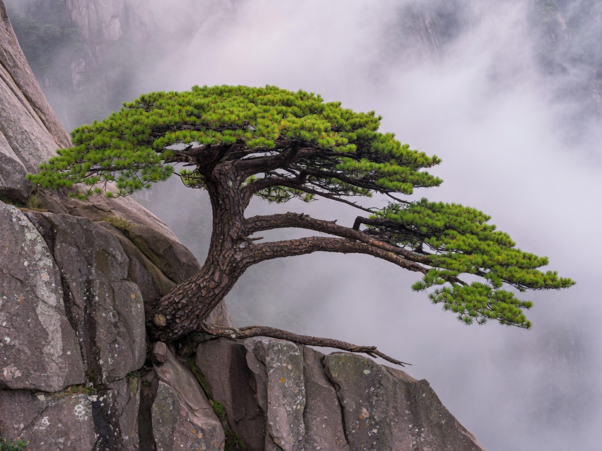
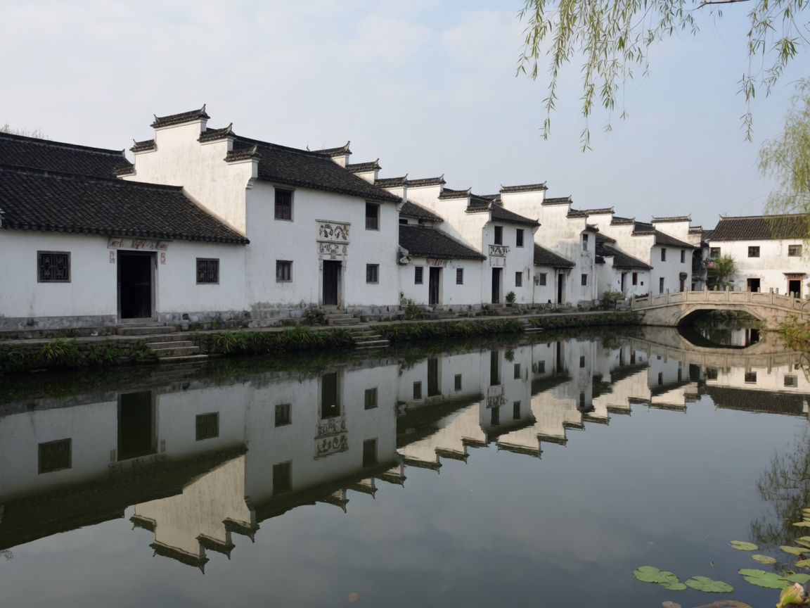

春
约 3–5 月
山花渐开，气温回升，偶有云海。台阶可能湿滑，带娃需注意防滑。清明前后游客较多。
世界文化与自然双遗产
黄山以「五绝」著称——奇松、怪石、云海、温泉、冬雪。这是一份写给第一次上山的普通游客（含带娃家庭）的实用指南：怎么到、怎么走、住哪、带什么。
四季皆可上山，景色各有侧重。云海、日出、雪景的出现与天气关系很大，以下为大致规律，出行前请关注景区天气与官方公告。
约 3–5 月
山花渐开，气温回升，偶有云海。台阶可能湿滑，带娃需注意防滑。清明前后游客较多。
约 6–8 月
山中相对凉爽，适合避暑。雨后易出云海，也要防暴雨与雷电。暑假是高峰，宜尽早订房。
约 9–11 月
天高气爽，能见度好，是观景与拍日出的热门季节。国庆前后人流密集，建议错峰。
约 12–2 月
有机会遇见雾凇与冬雪，山景如水墨。气温低、路面结冰，老人小孩需量力而行，必备防滑与保暖。
多数人先到黄山市，再转往景区门户汤口镇，然后选择前山或后山上山。
到黄山市：高铁一般抵达黄山北站；飞机抵达屯溪机场。市区（屯溪）到汤口镇有班车或出租车/网约车，路程约一小时量级，具体以当日交通为准。
汤口镇：景区南大门附近的集散与住宿重镇。行李可寄存在山下酒店，轻装上山更轻松。
多经慈光阁乘玉屏索道上山，出站即近迎客松、玉屏楼一带。
常见经云谷寺索道上山，靠近白鹅岭，通往北海、始信峰方向；另有太平索道等线路可选。
索道运行时间、是否停运受天气与检修影响，请以黄山风景区官方公告为准。旺季索道排队较长，尽量早点到站。
黄山步道以石阶为主，耗时因人而异。下列为一、两日游的常见走法，可按体力裁剪；带小孩建议选两日、少赶路。
出索道后即可看见迎客松与玉屏楼一带，黄山标志景观，适合拍照留念。
黄山最高峰之一。时间紧或带小孩可远眺而不登顶，把体力留给后面。
翻过陡峭路段抵达光明顶，视野开阔，是山上交通枢纽。
光明顶往西海方向的著名怪石，路过即可，不必久留。
西海落日与云海的热门观景点。一日游若太晚，可缩短停留。
北海散心后经白鹅岭下云谷索道。务必预留排队与末班车时间，以官方为准。
提示：一日游很赶，体力一般或带学龄前儿童更推荐两日游。
第一天 · 云谷索道上山，轻走北海与西海，傍晚住山上。
后山上山相对省力。北海是山上住宿与餐饮集中区域之一。
奇松怪石密布，步道短，适合家庭慢走拍照。
时间与体力允许可下西海大峡谷（部分路段陡、台阶多）；带老人小孩建议只到排云亭观景。
住北海或西海附近，凌晨头灯出行。日出能否看见取决于云层，遇云海亦是惊喜。
第二天 · 日出后经光明顶、玉屏方向下山。
补看白天未细看的枢纽与怪石，节奏可以很慢。
从容拍摄迎客松后，乘玉屏索道下山。也可全程步行至慈光阁，耗时更长。

核心取舍是：省钱与便利在山下，看日出与少赶路在山上。
选择多、价格相对友好，餐饮与补给方便，适合一日游或预算有限的家庭。缺点是看日出需当天下半夜上山，或干脆放弃日出，改看日落与云海。
紧挨观景点，清晨看日出最省事，两日游体验明显更好。房量有限、价格较高，热水与餐饮条件因酒店而异；旺季务必提前预订。
带娃家庭若体力一般，优先考虑「山下一晚 + 山上偶住一晚」或直接两日住山上，避免把行程排得过满。
徽菜口味偏重、善用发酵与熬煮。山上餐饮价格普遍高于山下，可自带些干粮与水。
徽州名菜。鲜鳜鱼经适度发酵再红烧，香而微臭，肉质紧实。接受不了「臭」味可先点小份尝试。
豆腐表面长出白色菌丝后煎制，外脆里嫩，常配辣酱。孩子若介意观感，可改点普通煎豆腐。
层酥馅香，梅干菜肉馅最常见，适合当爬山干粮，山下街头与屯溪老街都容易买到。
体积小、甜咸皆有，便于分装入口袋。与徽州烧饼常被一起提到，买时看馅料与口感即可。
山上步道几乎全是石阶，推车基本用不了；陡坡多、风雨多变。量力、减速、少带东西，比「打卡齐全」更重要。
带小孩：学龄前儿童建议选索道、缩短步行、避开西海大峡谷深段；准备零食、饮水、换洗衣物。教孩子靠右慢行、不攀爬护栏外岩石。
带老人：优先后山云谷索道上山，多休息，不去最陡支线。备好常用药，关注血压与膝盖，可带轻便登山杖（注意景区是否允许，以现场规定为准）。
装备清单
若行程有余力，黄山下山后很适合转去徽州古村落与屯溪老街，换一种「人在画里」的节奏。

以半月形水塘与牛形村落布局闻名，白墙青瓦倒影是经典画面。适合半日漫步拍照。
保存完好的徽派古村落，巷弄与牌坊气质沉静，和宏村可同一天或分两日走访。
黄山市区的步行老街，买烧饼、尝尝本地小吃、逛逛纪念品都很方便，适合行程收尾。